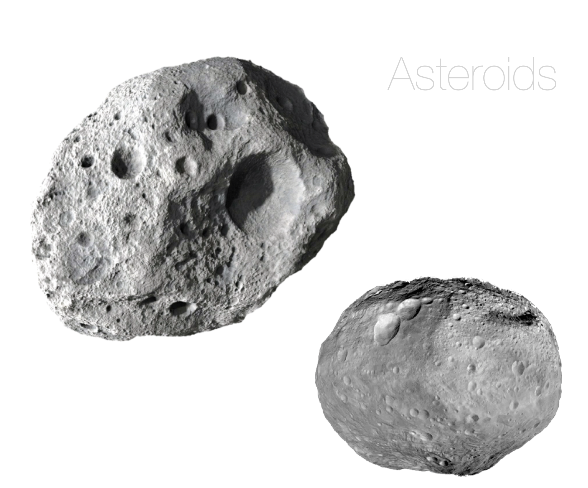
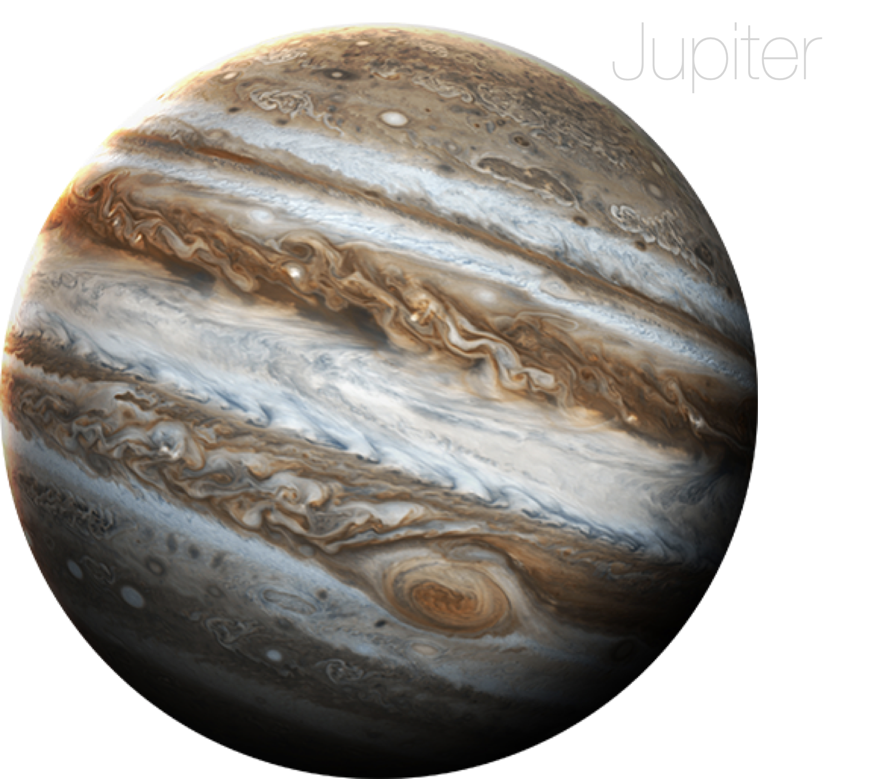
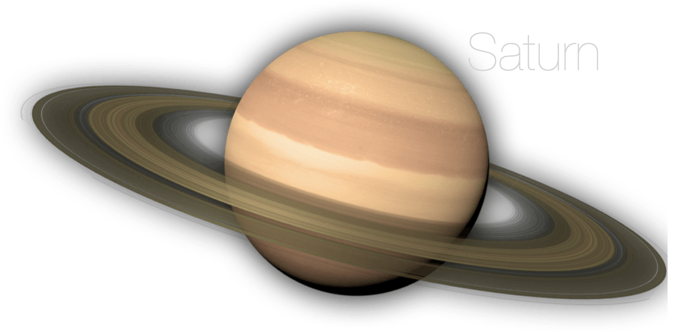
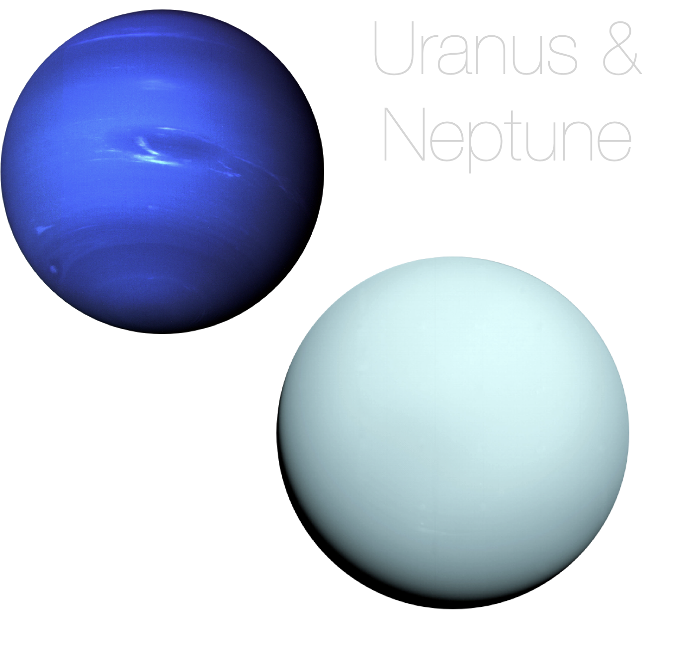
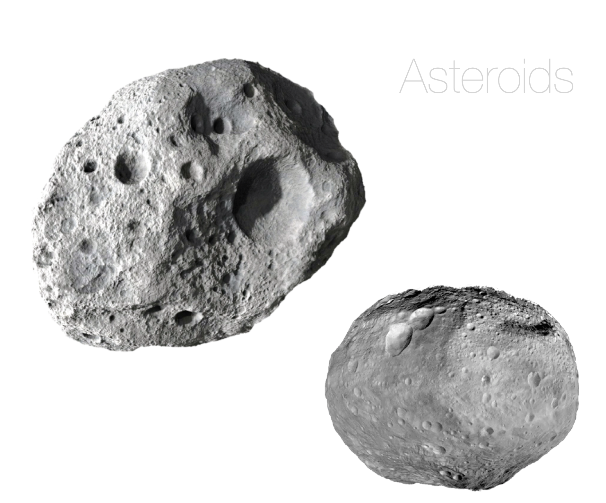
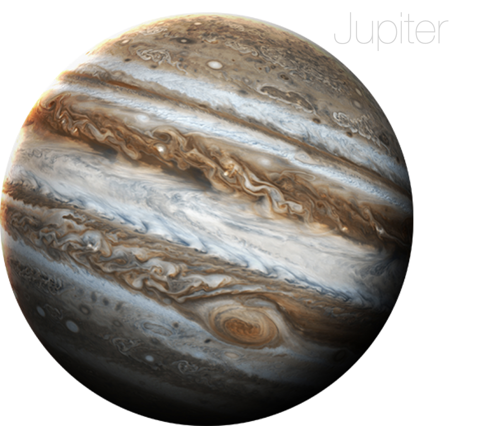
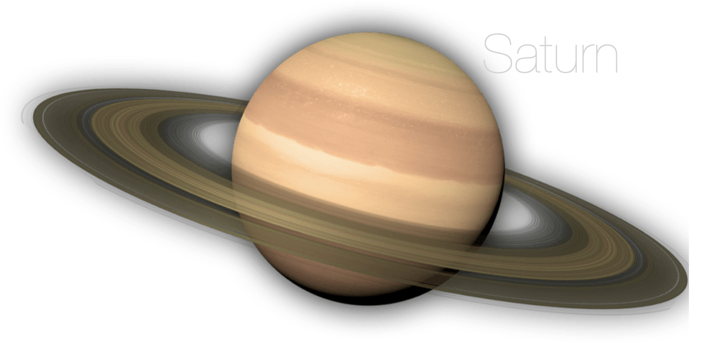
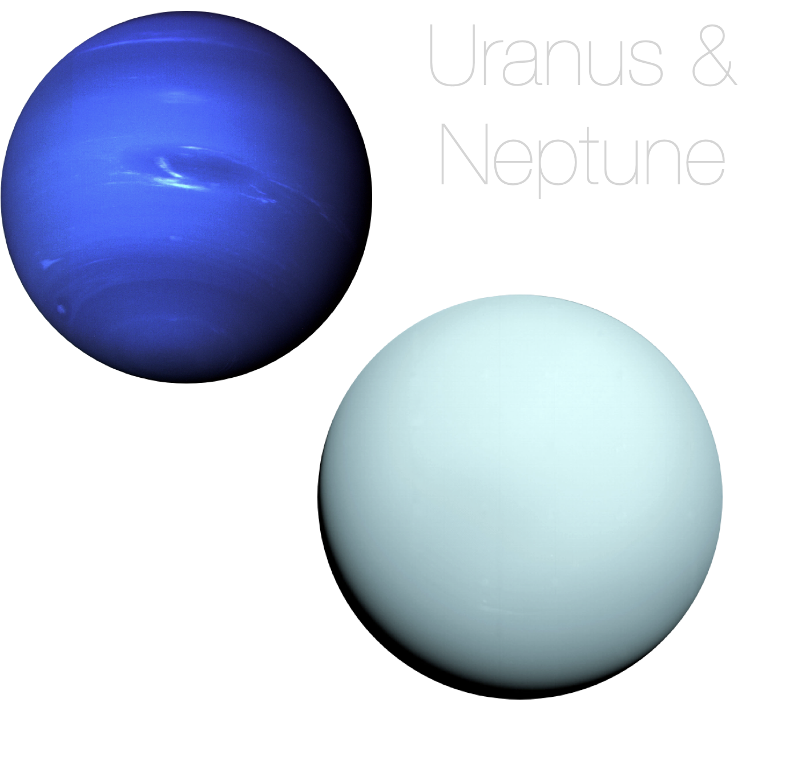

This graph shows the annual spending for all planetary science missions from 1960 to 2025 (spending has already been allocated until 2025 for many missions).
Check this box to see how this graph changes when spending is adjusted for inflation.
Hover over a mission's line to see tooltip information!
 






